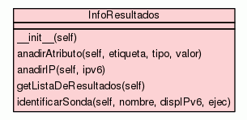

Class InfoResultados

Convencion de comunicacion de resultados entre la sonda y los modulos
de escritura.
Funcionan a traves de un diccionario de etiquetas con la siguiente
forma:
[(<IP>,(<etiqueta1>,(<tipo1>,<valor1>)),
(<etiquetaN>,(<tipoN>,<valorN>))...
,(<IP>,(<etiqueta1>,(<tipo1>,<valor1>)),
(<etiquetaN>,(<tipoN>,<valorN>))...
,(<IP>,(<etiqueta1>,(<tipo1>,<valor1>)),
(<etiquetaN>,(<tipoN>,<valorN>))...
,(<IP>,(<etiqueta1>,(<tipo1>,<valor1>)),
(<etiquetaN>,(<tipoN>,<valorN>))...
(<IP>,(<etiqueta1>,(<tipo1>,<valor1>)),
(<etiquetaN>,(<tipoN>,<valorN>))...]
Sera el modulo de escritura de destino el encargado de modelar esta
informacion y adaptarla a su formato concreto.
|
|
__init__(self)
Inicializa la lista de resultados como un diccionario. |
|
|
|
|
anadirAtributo(self,
etiqueta,
tipo,
valor)
Anade una etiqueta al ultimo registro IPv6 registrado. |
|
|
|
|
anadirIP(self,
ipv6)
Anade una IPv6 a la lista de resultados y inicializa su diccionario
de etiquetas, a la espera de ser rellenado. |
|
|
|
|
getListaDeResultados(self)
Devuelve la lista de resultados para ser tratada. |
|
|
|
|
identificarSonda(self,
nombre,
dispIPv6,
ejec)
Permtite identificar la sonda de origen para poder distingirla
posteriormente. |
|
|
|
Inherited from object:
__delattr__,
__format__,
__getattribute__,
__hash__,
__new__,
__reduce__,
__reduce_ex__,
__repr__,
__setattr__,
__sizeof__,
__str__,
__subclasshook__
|
|
Inherited from object:
__class__
|
__init__(self)
(Constructor)
|
|
Inicializa la lista de resultados como un diccionario. Usara de Clave
la IP.
- Overrides:
object.__init__
|
|
Anade una IPv6 a la lista de resultados y inicializa su diccionario de
etiquetas, a la espera de ser rellenado.
- Parameters:
ipv6 (string) - Direccion ipv6 a anadir.
|
identificarSonda(self,
nombre,
dispIPv6,
ejec)
|
|
Permtite identificar la sonda de origen para poder distingirla
posteriormente. Permite identificar tambien el dispensador y el ejecutor
usados.
Modifica el atributo _sondaOrigen : [<sonda>,
<dispensador>, <ejecutor>] No es un campo obligatorio. Por
defecto tiene valor: ["NoConocido", "NoConocido",
"NoConocido"]
|